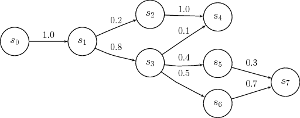
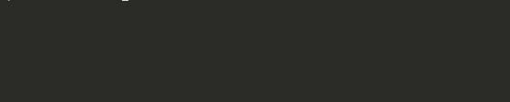
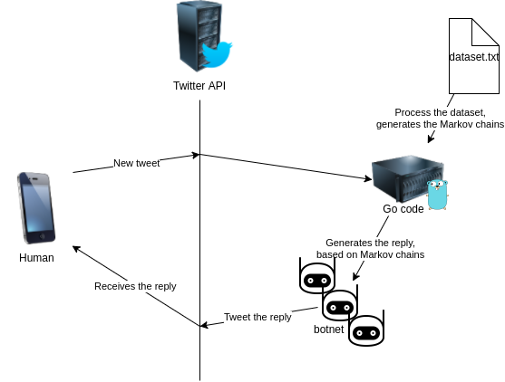
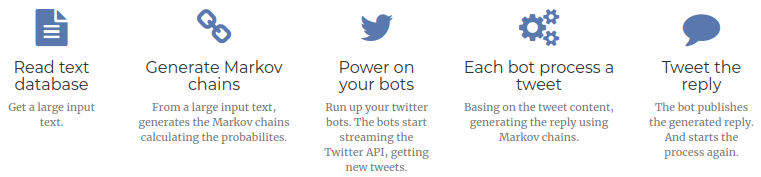
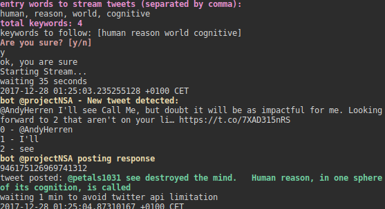
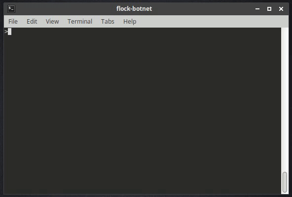
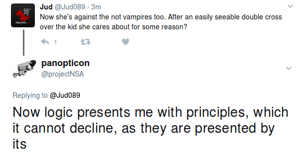
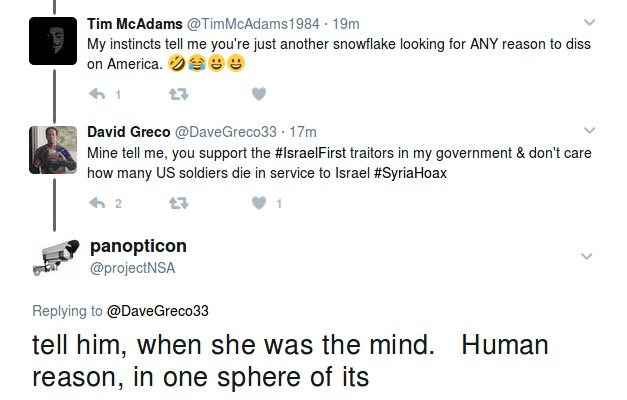
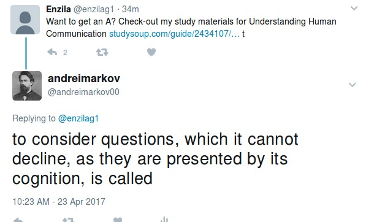

2017-12-29
The main goal of this article is to explain how to develop a twitter botnet with autonomous bots replying tweets with text generated based on probabilities in Markov chains. As this is a project to learn, we have made everything from scratch.
The idea of mixing twitter bots with Markov chains was in a Twitter conversation with @x0rz
A Markov chain is a sequence of stochastic events (based on probabilities) where the current state of a variable or system is independent of all past states, except the current state.
https://en.wikipedia.org/wiki/Markov_chain
In our case, we will use Markov chains to analyze the probabilities that after a word comes another concrete word. So, we will generate some diagram like the following one, but with thousands of words.

In our case, we need as input some text document with thousands of words, to get a better input data. In this example we have made it with the book “The Critique of Pure Reason”, by Immanuel Kant (http://www.gutenberg.org/cache/epub/4280/pg4280.txt), just because is the first book that we have found in .txt format.
First we need to read the text file:
func readTxt(path string) (string, error) {
data, err := ioutil.ReadFile(path)
if err != nil {
//Do something
}
dataClean := strings.Replace(string(data), "\n", " ", -1)
content := string(dataClean)
return content, err
}
To calculate the probabilities of the Markov states, we have made the following function that analyzes the full input text, and stores the Markov states:
func calcMarkovStates(words []string) []State {
var states []State
//count words
for i := 0; i < len(words)-1; i++ {
var iState int
states, iState = addWordToStates(states, words[i])
if iState < len(words) {
states[iState].NextStates, _ = addWordToStates(states[iState].NextStates, words[i+1])
}
printLoading(i, len(words))
}
//count prob
for i := 0; i < len(states); i++ {
states[i].Prob = (float64(states[i].Count) / float64(len(words)) * 100)
for j := 0; j < len(states[i].NextStates); j++ {
states[i].NextStates[j].Prob = (float64(states[i].NextStates[j].Count) / float64(len(words)) * 100)
}
}
fmt.Println("\ntotal words computed: " + strconv.Itoa(len(words)))
return states
}
The printLoading function, is just a simple function to print in the terminal the % of the process done:
func printLoading(n int, total int) {
var bar []string
tantPerFourty := int((float64(n) / float64(total)) * 40)
tantPerCent := int((float64(n) / float64(total)) * 100)
for i := 0; i < tantPerFourty; i++ {
bar = append(bar, "█")
}
progressBar := strings.Join(bar, "")
fmt.Printf("\r " + progressBar + " - " + strconv.Itoa(tantPerCent) + "")
}

To generate the text, we will need a initializer word and the length of the output text to generate. Then, we perform a loop and get words based on the Markov chains probabilities calculated in the previous step.
func (markov Markov) generateText(states []State, initWord string, count int) string {
var generatedText []string
word := initWord
generatedText = append(generatedText, word)
for i := 0; i < count; i++ {
word = getNextMarkovState(states, word)
if word == "word no exist on the memory" {
return "word no exist on the memory"
}
generatedText = append(generatedText, word)
}
text := strings.Join(generatedText, " ")
return text
}
To generate the text we need a function that given the markov chains and a word, returns a random probability based word to be the next word following the given word:
func getNextMarkovState(states []State, word string) string {
iState := -1
for i := 0; i < len(states); i++ {
if states[i].Word == word {
iState = i
}
}
if iState < 0 {
return "word no exist on the memory"
}
var next State
next = states[iState].NextStates[0]
next.Prob = rand.Float64() * states[iState].Prob
for i := 0; i < len(states[iState].NextStates); i++ {
if (rand.Float64()*states[iState].NextStates[i].Prob) > next.Prob && states[iState-1].Word != states[iState].NextStates[i].Word {
next = states[iState].NextStates[i]
}
}
return next.Word
}
To interact with the Twitter API, we will use go-twitter library https://github.com/dghubble/go-twitter .
We setup a streaming connection with the Twitter API, we will filter tweets by some words related to our input dataset:
func startStreaming(states []State, flock Flock, flockUser *twitter.Client, botScreenName string, keywords []string) {
// Convenience Demux demultiplexed stream messages
demux := twitter.NewSwitchDemux()
demux.Tweet = func(tweet *twitter.Tweet) {
if isRT(tweet) == false && isFromBot(flock, tweet) == false {
processTweet(states, flockUser, botScreenName, keywords, tweet)
}
}
demux.DM = func(dm *twitter.DirectMessage) {
fmt.Println(dm.SenderID)
}
demux.Event = func(event *twitter.Event) {
fmt.Printf("%#v\n", event)
}
fmt.Println("Starting Stream...")
// FILTER
filterParams := &twitter.StreamFilterParams{
Track: keywords,
StallWarnings: twitter.Bool(true),
}
stream, err := flockUser.Streams.Filter(filterParams)
if err != nil {
log.Fatal(err)
}
// Receive messages until stopped or stream quits
demux.HandleChan(stream.Messages)
}
Then, each time that a new tweet with some of our tracking words is tweeted, we process that tweet and then we generate a reply based on the Markov chains, and we post that reply:
func processTweet(states []State, flockUser *twitter.Client, botScreenName string, keywords []string, tweet *twitter.Tweet) {
c.Yellow("bot @" + botScreenName + " - New tweet detected:")
fmt.Println(tweet.Text)
tweetWords := strings.Split(tweet.Text, " ")
generatedText := "word no exist on the memory"
for i := 0; i < len(tweetWords) && generatedText == "word no exist on the memory"; i++ {
fmt.Println(strconv.Itoa(i) + " - " + tweetWords[i])
generatedText = generateMarkovResponse(states, tweetWords[i])
}
c.Yellow("bot @" + botScreenName + " posting response")
fmt.Println(tweet.ID)
replyTweet(flockUser, "@"+tweet.User.ScreenName+" "+generatedText, tweet.ID)
waitTime(1)
}
func replyTweet(client *twitter.Client, text string, inReplyToStatusID int64) {
tweet, httpResp, err := client.Statuses.Update(text, &twitter.StatusUpdateParams{
InReplyToStatusID: inReplyToStatusID,
})
if err != nil {
fmt.Println(err)
}
if httpResp.Status != "200 OK" {
c.Red("error: " + httpResp.Status)
c.Purple("maybe twitter has blocked the account, CTRL+C, wait 15 minutes and try again")
}
fmt.Print("tweet posted: ")
c.Green(tweet.Text)
}
If you ever played with the Twitter API, you will have seen that there are some restrictions and limitations. That means that if your bot have too much posting activity, the account will get blocked for some minutes.
To avoid this limitation, we will deploy a botnet, where each bot will be replying tweets based on the Markov chains probabilities. In this way, when a bot post a tweet reply, the bot falls asleep for 1 minute. In the meantime, the other bots will be processing and replying the other tweets.

In this demo, we will use only 3 bots (twitter accounts).
The botnet configuration will be in the config.json file:
[{
"title": "bot1",
"consumer_key": "xxxxxxxxxxxxx",
"consumer_secret": "xxxxxxxxxxxxx",
"access_token_key": "xxxxxxxxxxxxx",
"access_token_secret": "xxxxxxxxxxxxx"
},
{
"title": "bot2",
"consumer_key": "xxxxxxxxxxxxx",
"consumer_secret": "xxxxxxxxxxxxx",
"access_token_key": "xxxxxxxxxxxxx",
"access_token_secret": "xxxxxxxxxxxxx"
},
{
"title": "bot3",
"consumer_key": "xxxxxxxxxxxxx",
"consumer_secret": "xxxxxxxxxxxxx",
"access_token_key": "xxxxxxxxxxxxx",
"access_token_secret": "xxxxxxxxxxxxx"
}
]
The complete process will be:

We have setted up a small demo with 3 bots. As we have said in the beging of this post, we have used the “The Critique of Pure Reason”, by Immanuel Kant to generate the Markov chains.
When the botnet is up working, the bots start streaming all the twitter new tweets containing the configured keywords.
Each bot takes a tweet, analyzes the containing words, and generates a reply using the Markov chains previously calculated, and posts the tweet as reply.
Example of terminal view during the flock-botnet execution:

Here is an example of the execution:

In the following examples, there are some screenshots that the bots (“@andreimarkov”, “@dodecahedron”, “@projectNSA”) have been replying to some people.



In this article, we have seen how to build a Twitter botnet with the bots replying tweets with text generated based on Markov chains.
As in this article we have used only 1 grade Markov chains, so the generated text is not really like humans text. But for future projects, a good choice would be combining more grades Markov chains with other text mining techniques.
Twitter API have lots of uses, and in this post we have seen one of them. I hope to be able to write some more articles about other projects arround the Twitter API. For example some Twitter network nodes analysis, or some users & hashtags analysis.
The complete code of this project is able in https://github.com/arnaucube/flock-botnet
Project page: http://arnaucube.com/flock-botnet/